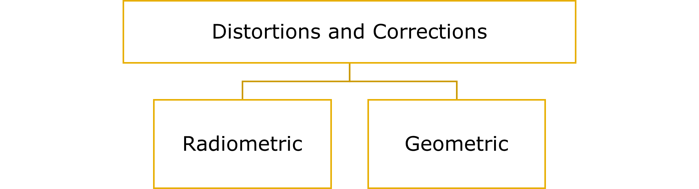

Corrections
We now understand the role of EMW its interaction, transmission, reflection, reception which that leads to data storage in bits (sensor (one or multiple) on a satellite>sensor (active/passive)>target area> sensor> recorded in pixel forming band> multiple band with various information> final digital image. (Refer Week 1)
We already know of types of sensors and what they do (Week 1), this week we learnt on how they do it and the challenges of producing the desired output.
The challenge here is the corrections that need to be done to the input received.
Principle Imaging Sensor Systems
Indicated below are primary ways of image recording.

- Analogue

- Digital

Scanning modes
In this section we see how the Digital recording is carried out- by scanning!!, indicated below are the various scanning modes.

- Cross- Track Scanning System - Passive system
- Along- Track Scanning System - Passive system
- Circular Scanning System - Passive system
- Side Scanning System
1. Cross- Track Scanning System - Passive system
- Widely used
- faceted mirror- horizontal axis of rotation-aligned parallel with flight direction
- sweeping= parallel scan lines oriented normal (perpendicular) to filght direction.
- High Scanner speed is
2. Along- Track Scanning System - Passive system
- Along track scanning/ push-broom scanners= movement of the ground resolution cells
- has individual detector- insead of mirrior-
- to increase dwell time for each ground resolution
- hence elemination of scanning mirrior
- introduction of individual detector for each ground resolution cell (across the swath)
- placement of detectors- linear array (focal plane of the image)
- orientation of long axis of linear array- Normal to light path
- IFOV of detector- sweeps terrain prallel with the flight track
- Increased dwell time
- ditectors: smaller IFOC (finer SPATIAL resolution) and narrow spectral bandwidth (higher SPECTRAL resolution)
3. Circular Scanning System - Passive system
- mounting of scan monitor and mirror= vertical axis of rotation
- path of sweeping- circular
- only forward portion of sweep is recorded
- processing and display systems designed for linear scan data
- circular scan data
- extensively reformatted (prior processing)
- short dwell time (compared to cross- track scanners)
- Application:
- reconnaissance purpose (heli and low flying aircraft)
4. Side Scanning System- Active System
- Active system
- Eg: sonar (SOund NAvigation and Ranging)
- Application:
- Map seafloors
- Habitat of marine animals
- Detecting imaging objects in sea floors
- Transducer array sent and recieved
- Mounted on ship’s hull
- Benefits: less expensive
- Issues: cannot measure: Bathymetry (depth)
- solution: use it in tandem single-bean and multibean sonar
Factors affecting Signal Strength
The scanning is done to receive back a signal to create a pixel>band with information. But! the signal we receive back can have varied strength due to various factors that affect it, indicated below are the same:
- Energy Flux
- altitude
- Spectral Bandwidth of the detector
- instantaneous field of view
- Dwell time
Scan Lines
“A remote-sensing tool with a line of many fixed sensors that record reflected radiation from the terrain along a satellite’s direction of movement, creating scan-line strips that are contiguous or that overlap slightly, thereby producing an image” esri
View: Perspective and Planimetry
Now we understand how the scanning is performed by a Sensor (above sections), we further need to understand about perspective. How the object can be viewed so as to better understand corrections.
| Perspective View | Planimetric View | |
|---|---|---|
| lights rays reflected | pass through one single point at the center | looks as through every position on the ground is being viewed from directly above |
| Scale | Varies | everywhere consistent (if we overlook variation in small- scale maps (map projections) |
| view | objects far away = smaller objects close= bigger |
all objects appear to be of the same scale. |
| perception | more perspective of depth | comparatively no (as easier to compare between two points, as there is no perception of distance) |
| more realistic looking due to depth perception | accurate measure, details are clear | |
| Example | photo-realistic renderings or animations | Topographic maps, Orthoimages, technical drawings and architectural plans etc. |
{kind=link}
Image correction!
- Raw remotely sensed data- ISSUES
- Geometric and radiometric flaws – why?
- Curved shape of the Earth
- Imperfectly transparent atmosphere
- Daily and seasonal variations (receiving solar radiation)
- Imperfections in scanning instruments
- why do we need image correction??
- to remove distortion= individual picture elements are in their proper plainmetric (x,y).

Radiometric Correction
- Precisely estimate the reflectively of an environment
- Meaning: improve the brightness value/ reduce inconsistencies in image brightness (not spatial or locational aspects)
- Errors= Noise
- How?
- compensating for the distortions (antenna system , positioning errors etc.)
- eg: ncl.ac.uk; l3harrisgeospatial
- Correction procedures storymaps
- Radiative Transfer Code Model: Clear atmospheric conditions, creating scattering models. requires data retrieved from ground. accuracy= High
- Image-based: Information source= image, accuracy= low
- Regression: analyses each band, estimation of brightness in each image
Geometric Correction
PROCESS:
- Correcting geometric distortion
- Assigning properties of a map to an image
Source:
- Relief displacement
- less factor: satellite remote sensing (due to altitude)
- high factor: aerial imagin
- Earth curvature
- curvature
- eastward spinning
- ORBIT:
- ORBIT of earth:West to East
- ORBIT of satellite: pole to pole (IKONOS, Landsat, and the NOAA)
- Cylindrical projection: S shape waves
- Each scan row begins at a position slightly west of the row that preceded it
- First pixel in each row appears to be aligned with the other initial pixels
Geometric correction solution modelling 2 solution: - Jensen page 244 describes - RMSE
Atmospheric Correction
- Need:
- To remove the scattering and absorption effects from the atmosphere
- Why?- to obtain surface reflectance characteristics
- Atmospheric scattering (as we saw in week 1)
- Topographic attenuation (up next)
- Unnecessary
- Necessary
1. Atmospheric scattering
Types:
- Dark object subtraction
- Psuedo-invariant Features
- Absolute(definitive)
- 4th - Empirical Line Correction (3)
2. Topographic Correction
- Orthorectification Correction (6)
- Radiometric Calibration
- Landsat ARD- Surface reflectance
- Joining data sets
- Image Enhancement
3. Unnecessary
- Ortho
4. Necessary
- Orthorect
Resampling
- Extraction of a brightness value from an x, y location
| Nearest Neighbour | Bilinear | Cubic |
|---|---|---|
|
|
similar to Bilinear
|

Application
LiDAR system (maximize the benefit of LiDAR data). How? requires geometric calibration (GC) and radiometric correction (RC)
Study area: British Columbia Institute of Technology (BCIT) , Burnaby, British Columbia, Canada
Feasibility of the proposed GC and RC methods: LiDAR dataset
Date: July 17, 2009 at local time 14:55
Temp: 29.8 °C
Vertical visibility = 48.3 km
The pressure = 101.81 kPa
Source: National Climate Data and Information Archive from Environment Canada
Sensor: Leica ALS50
- Average flying height= 600 m
- Point density= 4–5 points per meter square
Why choose the study area?- variety in land cover
Subset:
- Subset of a single LiDAR strip >> clipped
- Dimension = 500 m × 400 m (experimental testing)
- Direction of the flight survey = west-> east
- points= 1 Mn
- calibration: geometrically calibrated using the quasi
- rigorous method
Four Datasets: used for land cover classification and comparative analysis
- Original intensity data
- GC intensity data
- RC intensity data
- GC and RC intensity data
Intensity data image classification= Gaussian maximum likelihood classification (MLC) technique
calculation= kappa statistics + overall accuracy
three classification scenarios
4 data sets
- Requirement of method:
- Time
- Tagged point cloud
- Trajectory position data
- Results and Discussion
- Radiometric correction (when system raw measurements are not available)
- Geometric system calibration= improve scan mirrors angles and ranges.
- Considerations of correction:
- System parameters
- Topographic effect
- Atmospheric attenuation
- Post training:
- The separabilities
Training areas (land cover classes intensity values)= higher ( compared to the original intensity data)
result= expected accuracy improvement (land cover classification)
- The separabilities
- Classification results >> assessed and compared >> different scenarios of 3- to 5-feature classes
- Original intensity data =31% to 61% (classification accuracy range)
- GC intensity data = 0.1% to 1.6% (classification accuracy improvement in intensity)
- RC intensity data= 8.0% to 11.6% (classification accuracy improvement in intensity)
- GC and RC intensity data= 43% to 70% (classification accuracy range) ; 9.4% to 12.8% (classification accuracy improvement in intensity)
- GC and RC should be implemented for LiDAR (improves accuracy)
Reflection
- Geometric and radiometric corrections are most common in remote sensing.
- Occurs in data acquisition process, resulting in reducing the quality of the data (remotely sensed)
- It is essential to correct radiometric distortions to obtain a real reflectance
- Calibrated image result is different from un-calibrated= correction is required
- Radiometric comparability importance=
- Surface features(over a timeperiod)
- Comparision of data (eg: lab to field)
- Radiometric= geo-referencing an image >> comparison of one image pixel to another which is geo-spatially matching (can be from a different sensor, but compatable resolution)
- If different accusation dates of 2 image= change observed in calulate radiometric difference.
- Sun spot= “The solar radiation will be reflected diffusely onto the ground surface, which results in lighter areas in an image” sar.kangwon
- Paolini et al. (2006); Small et al. (2007)